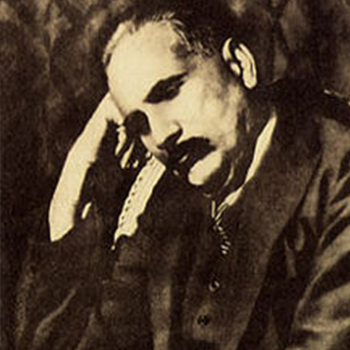
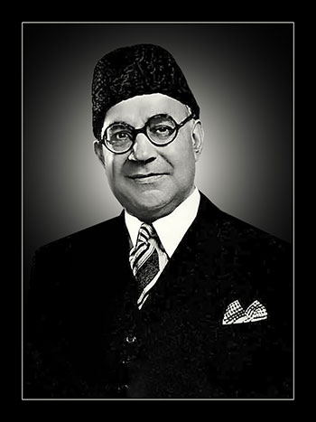
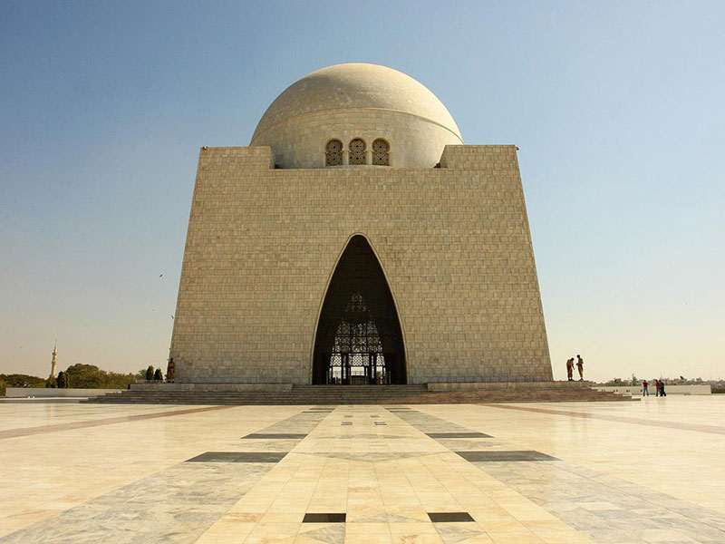
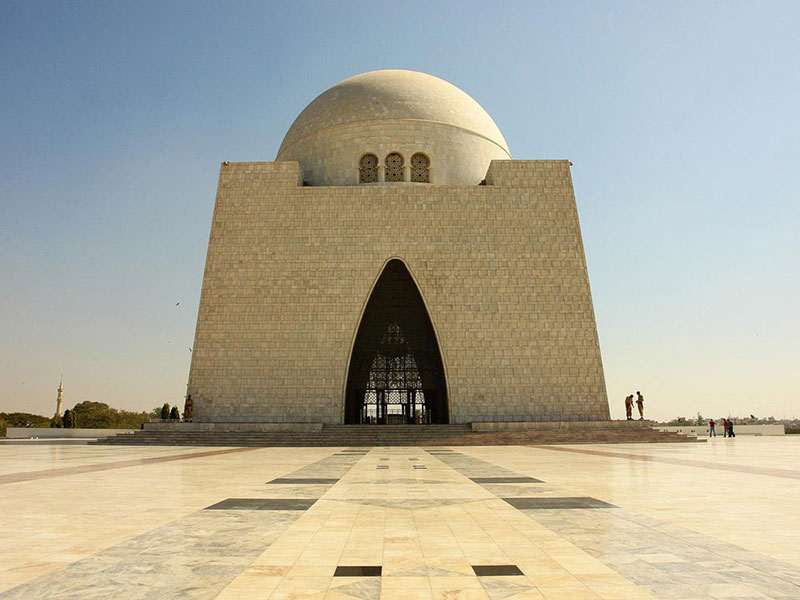

Jinnah was born in Karachi on December 25, 1876 into a wealthy merchant family. He attended the Sindh Madrasa-tul-Islam and the Christian Mission School.
In 1893, he became the youngest Indian to be called to the Bar at Lincoln's Inn. He became a successful lawyer in Bombay and entered politics in 1905.
Achievements
Jinnah was the first Governor-General of Pakistan, serving from 1947–48. He helped establish the new nation's government and policies, and he oversaw the
creation of refugee camps for Muslims who fled India. He also proposed the Fourteen Points of Jinnah, which included demands for separate electorates and
reserved seats for Muslims in government.
Legacy
Jinnah is known as the "Father of the Nation" and is revered as Pakistan's greatest leader. He is also known as "the best ambassador of Hindu-Muslim unity"
for his efforts to unite Hindus and Muslims politically. His birthday, December 25, is celebrated as a public holiday in Pakistan as Quaid-e-Azam Day.
Achievements
Jinnah was the first Governor-General of Pakistan, serving from 1947–48. He helped establish the new nation's government and policies, and he oversaw the creation of
refugee camps for Muslims who fled India. He also proposed the Fourteen Points of Jinnah, which included demands for separate electorates and reserved seats for Muslims in government.
Legacy
Jinnah is known as the "Father of the Nation" and is revered as Pakistan's greatest leader. He is also known as "the best ambassador of Hindu-Muslim unity" for his efforts
to unite Hindus and Muslims politically. His birthday, December 25, is celebrated as a public holiday in Pakistan as Quaid-e-Azam Day.

Allama Iqbal
Introduction:
Allama Iqbal’s actual name was Muhammad Iqbal, and he is referred to as “Allama” because of his literary contributions and knowledge. He was a well-known poet, philosopher, and an important
politician in the Sub-Continent. He greatly influenced Pakistan’s ideology because of his ideas on nationalism, Islam, and self-identity.
Allama Iqbal greatly influenced the freedom struggle of the Muslims in the subcontinent and fought alongside the founder, Quaid e Azam Muhammad Ali Jinnah, for independence of Pakistan, a separate and
united nation for the Muslims of the subcontinent. Iqbal’s ideas and philosophies are still relevant in the 21st century. This essay on Allama Iqbal explores his literary contributions, political and social
activism, philosophy and ideas and lastly, Iqbal’s legacy and impact.
Early Life And Education:
Allama Iqbal was Born on November 9, 1877, in Sialkot. Iqbal belonged to a religious and traditional family. His father’s name was Sheikh Noor Muhammad, and he was a tailor. His mother, Imam Bibi, was a housewife.
From a very early age, Iqbal showed signs of intellectual wisdom. He excelled in his studies and always had a keen interest in poetry.
Allama Iqbal’s official schooling started in Sialkot at the Scotch Mission College. For his college he moved to Lahore and went to the Government College, where he graduated with a Bachelor of Arts. For higher
education, Iqbal moved to Europe and attended the Universities of Cambridge and Munich. Studying abroad had a lasting impact on Iqbal’s vision and world
view as he had introduced him to Western intellectual ideas.

Liaqat Ali Khan
Liaqat Ali Khan, Pakistan's first Prime Minister, presented the country's national flag to the Constituent Assembly of Pakistan on August 11, 1947. The flag was designed
by Syed Amir-uddin Kedwaii and was based on the original flag of the Muslim League.
There are the best heroes in history of PakistanPrevious
 
